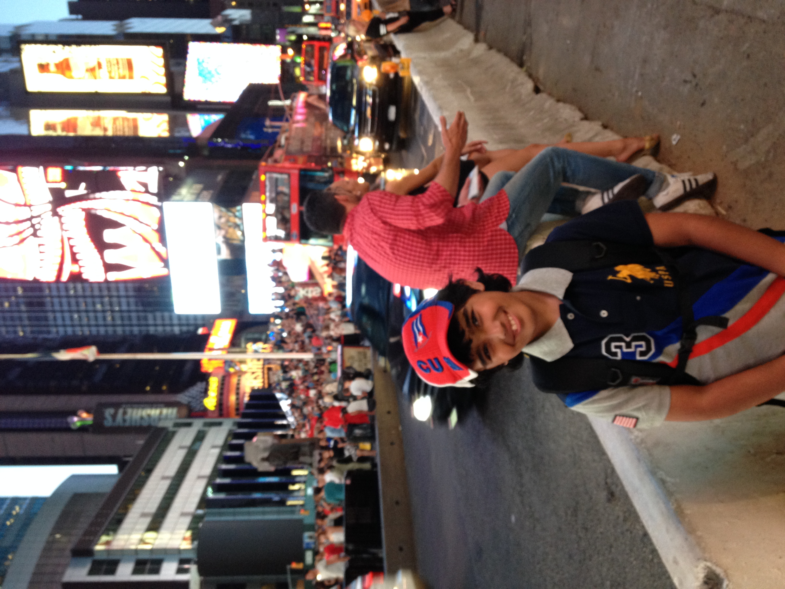

Student ved HVL
Velkommen til min personlige nettside.
Hei! Jeg heter Ateeq Mir, og jeg er 20 år gammel. Jeg er en aktiv person som liker å bruke fritiden min på forskjellige aktiviteter. Noen av mine største interesser er kampsport, gaming og trening. Dette er ting som betyr mye for meg, og som jeg bruker mye av tiden min på. Kampsport e en av interessene mine fordi jeg liker utfordringer og å utvikle meg både fysisk og mentalt. Gjennom kampsport lærer man disiplin, respekt og selvkontroll. Jeg synes det er motiverende å lære nye teknikker og se fremgang over tid. Det er også en fin måte å holde seg aktiv på. Trening er gså en viktig del av hverdagen min. Jeg liker å være fysisk aktiv og jobbe med å bli sterkere og få bedre kondisjon. Trening gir meg energi og motivasjon, og jeg synes det er gøy å sette meg mål som jeg kan jobbe mot. Når jeg ikk trener, liker jeg å spille videospill. Gaming er noe jeg synes er både morsomt og avslappende. Jeg liker å spille forskjellige typer spill, spesielt når jeg kan spille sammen med venner. Det er en fin måte å koble av på etter en lang dag. Jeg liker også å se på serier, nede så kan dere se en tier liste for serier jeg har sett. Som person liker jeg å lære nye ting og utfordre meg selv. Jeg prøver alltid å utvikle meg og bli bedre på det jeg driver med. For meg handler det om å ha en god balanse mellom trening, gaming og andre aktiviteter i hverdagen.